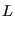

As with temperature control, there are different classes of pressure
control for MD simulation. The only one we consider here is the length-scaling
technique of Berendsen. It should be noted that one can also use
the the extended Nosé-Hoover (extended Lagrangian)
formalism of Martyna, which is mentioned in F&S; in the interest of time, we
will forego a discussion of this technique.
Here we consider implementation of the Berendsen
barostat [9]. Recall that the working definition of
instantaneous pressure,  , is given by:
, is given by:
where  is the virial:
is the virial:
and  is the system volume.
is the system volume.
 is the
force exerted on particle
is the
force exerted on particle  by particle
by particle  .
.
Consider a cubic system, where . The Berendsen barostat uses
a scale factor,  , which is a function of , to scale lengths in
the system:
, which is a function of , to scale lengths in
the system:
 |
|
|
(223) |
|  |
|
|
(224) |
is given by
![$\displaystyle \mu = \left[1-\frac{\Delta t}{\tau_P}\left(P_0 - P\right)\right]^{1/3}$](img630.png) |
(225) |
Here,  is the integrator time-step, is the “rise
time” of the barostat, and is the setpoint pressure. Berendsen
discusses the tensor-based analog for non-cubic
systems [9].
is the integrator time-step, is the “rise
time” of the barostat, and is the setpoint pressure. Berendsen
discusses the tensor-based analog for non-cubic
systems [9].
The code mdlj_berp.c implements
the Berendsen barostat. The relevant parameters are berP, the setpoint pressure, and ber_tau, the rise time. Fig. 28 shows pressure vs time for four MD simulations of 512 particles with a setpoint pressure of 2.
Figure 28:
Pressure vs time (output every time step) for three Berendsend-barostatted MD simulations of the LJ fluid at initial density 0.84 with 512 particles. The rise time  is indicated for each system in the legend. The setpoint pressure is 2.0, and all simulations were initialized with velocities consistent with a temperature of 2.0.
is indicated for each system in the legend. The setpoint pressure is 2.0, and all simulations were initialized with velocities consistent with a temperature of 2.0.
|
|
Length scaling at each time step using a global scale factor, while
effective in this instance, can be lead to violent oscillations of
pressure in more ordered systems, and is therefore not recommended for
production MD runs. However, it is common to find length scaling
barostats used in the literature without reporting how effective they
are, measured at least in terms of pressure and its fluctuations. But
they can be useful for pre-equilibrating samples at some prior to
beginning an NVE simulation during which one hopes the instantaneous
pressure fluctuates about the previous setpoint. It is easy to
implement both the Berendsen thermostat and barostat in the same
simulation program, to allow pre-equilibration at setpoint  and .
cfa22@drexel.edu
and .
cfa22@drexel.edu